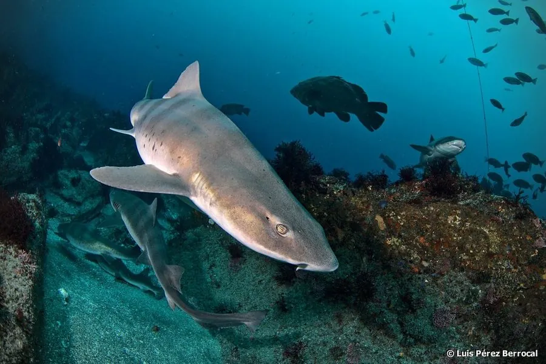

鱼类 · 动物界
皱唇鲨 Triakis scyllium

西北太平洋近岸常见的小型鲨鱼，体侧散布暗色斑点、吻部圆钝，白天多伏在沙底，以底栖动物为食。
- 分类
- 门脊索动物门纲软骨鱼纲目真鲨目科皱唇鲨科属皱唇鲨属
- 栖息环境
- 近岸沙泥底质、岩礁和海藻床，水深通常不超过 100 m
- 地理分布
- 西北太平洋，包括日本、朝鲜半岛、中国沿海和台湾周边
- 保护级别
- 暂无评估；中国未列入国家重点保护野生动物名录
物种志
皱唇鲨体呈细长的纺锤形，吻部圆钝，口小，唇褶发达，因此得名“皱唇鲨”。体色背部灰褐或黄褐，腹部白色，体侧和背部散布着许多暗色小斑点和横纹。成鱼体长一般 1–1.5 m，最大可达 2 m。
皱唇鲨分布于西北太平洋，包括日本、朝鲜半岛、中国沿海和台湾周边。它栖息在近岸的沙泥底质、岩礁和海藻床，水深通常不超过 100 m，白天多伏在海底，夜间出来捕食，吃小鱼、甲壳类、软体动物和环节动物。皱唇鲨为卵胎生，每胎可产 10 余尾幼鲨。它性情温和，是沿海常见的兼捕鱼类，目前没有针对性的保护评估。它通常不主动攻击人类，潜水时遇到多会自行游开。
形态与习性
- 食性小鱼、甲壳类、软体动物和环节动物
- 体长一般 1–1.5 m，最大可达 2 m
- 活动节律白天伏在海底，夜间出来捕食
- 繁殖卵胎生，每胎可产 10 余尾幼鲨
- 栖息深度通常不超过 100 m
- 性情温和，通常不主动攻击人类
趣味知识
- 皱唇鲨的唇褶很发达，口闭合时仍能看到皱起的唇部。
- 它白天常一动不动地伏在沙底，靠体色与周围环境融为一体。
- 皱唇鲨是卵胎生，幼鲨在母体内发育到一定大小才产出。